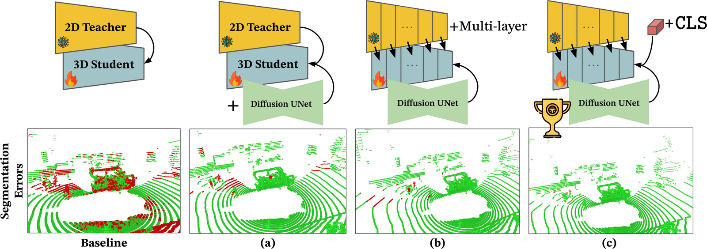
Effect of HilDA components on semantic accuracy. Starting from a final-layer baseline (left), segmentation errors (red) progressively vanish as we add (a) temporal occupancy diffusion, (b) multi-layer distillation, and (c) global context (CLS) distillation.
Vision Foundation Models (VFMs) are powerful teachers for camera-to-LiDAR knowledge distillation, helping LiDAR backbones learn rich semantics without manual labels. Yet current methods treat VFMs as black boxes — distilling only frame-wise features from the final layer, and ignoring both the teacher's layer-wise semantic structure and the spatiotemporal information in LiDAR sequences.
We propose HilDA, a self-supervised pre-training framework that captures both the semantic what and the geometric where needed for driving. HilDA combines hierarchical distillation — multi-layer distillation for progressive semantic alignment plus global context distillation for scene-level semantics — with a temporal occupancy diffusion objective that enforces spatiotemporal consistency. Models pre-trained with HilDA reach state-of-the-art results on cross-modal distillation benchmarks and outperform prior distillation methods on 3D detection, scene flow, and semantic occupancy prediction.
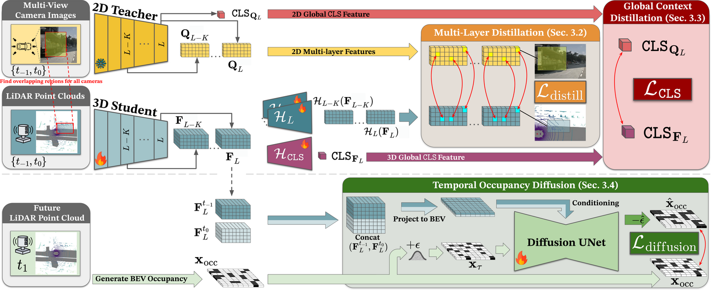
Overview of HilDA. From LiDAR sweeps and synchronized multi-view images, a 3D backbone is trained with three self-supervised objectives: multi-layer point–pixel distillation from a frozen VFM, global context distillation via CLS tokens, and temporal occupancy diffusion conditioned on past + present student features to predict future BEV occupancy.
Instead of supervising only the VFM's final layer, HilDA aligns multiple teacher layers with corresponding student layers via calibrated point–pixel correspondences. The 3D student learns how features form across the hierarchy, transferring the teacher's progressive semantic refinement.
Local point–pixel matching misses scene-level context. HilDA aligns the VFM's CLS token with a learnable 3D global-context token (max-pooled student features), injecting holistic, scene-level semantics — e.g. distinguishing highway from residential.
A label-free generative auxiliary task: a conditional diffusion model denoises future BEV occupancy given past + present LiDAR features. Coarse-to-fine denoising injects geometric and motion cues, teaching the backbone object permanence and scene dynamics.
All three objectives are optimized jointly, end-to-end, on the nuScenes training split using only synchronized RGB–LiDAR data and calibration — no task labels. The resulting backbone transfers to all downstream benchmarks without re-pretraining; the distillation and diffusion heads are discarded at inference.
HilDA sets a new state of the art on camera–LiDAR cross-modal distillation and transfers strongly to spatial and spatiotemporal 3D tasks. Highlights below.
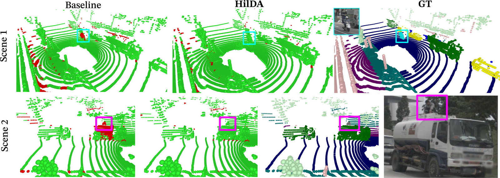
HilDA makes fewer errors (red) than ScaLR and correctly segments rare long-tail cases — a scooter driver (Scene 1) and a person on top of a truck (Scene 2). Largest gains appear in the data-scarce 1–10% label regimes.
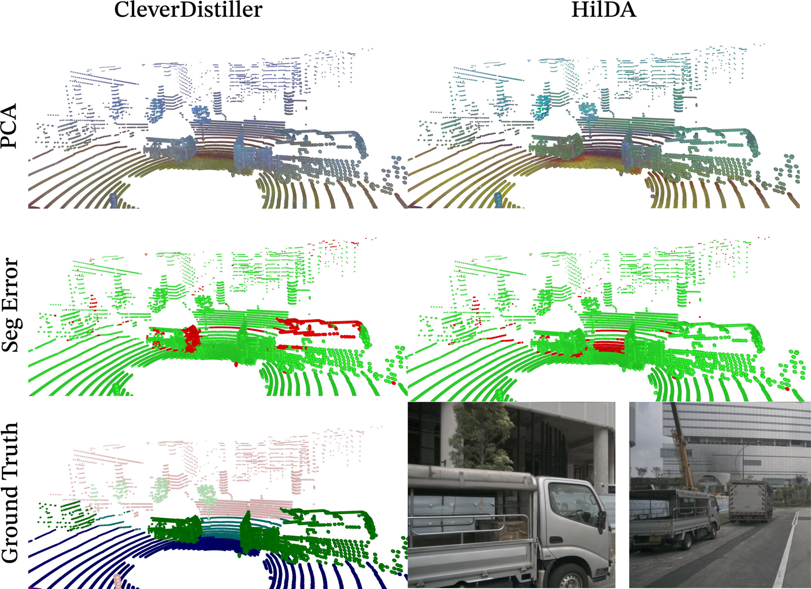
PCA projections of the learned point features (top), segmentation error maps (middle), and ground truth (bottom). HilDA produces more structured, object-coherent embeddings than CleverDistiller, translating into fewer segmentation errors (red).
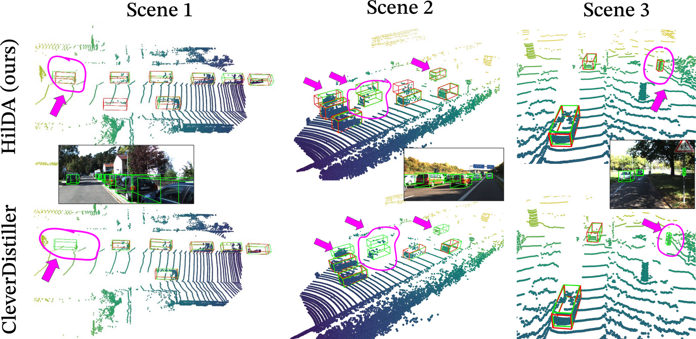
With PointRCNN, HilDA yields robust detections at long range and under heavy occlusion (highlighted), where the prior distillation baseline (CleverDistiller) misses objects.
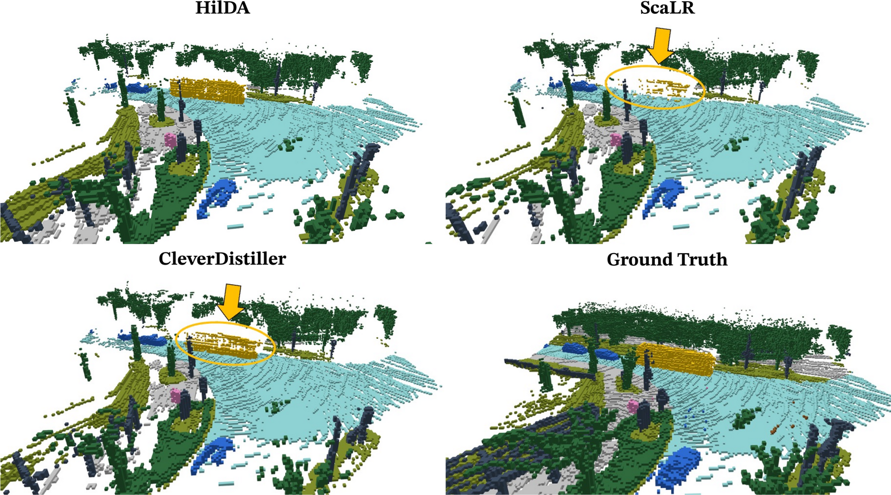
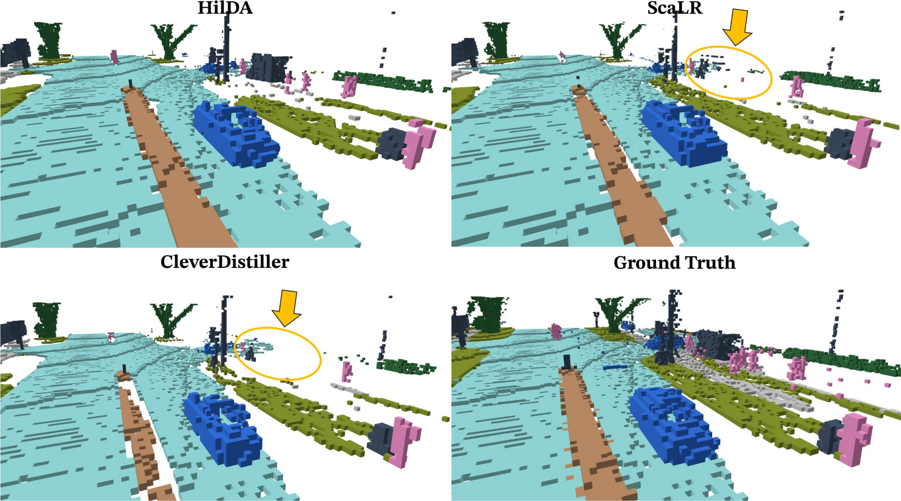
HilDA reconstructs cleaner, more complete semantic occupancy than ScaLR and CleverDistiller (highlighted gaps), and keeps the highest mIoU across a 5-second horizon. Gains are largest on dynamic, object-centric classes.
Baseline — flow / error
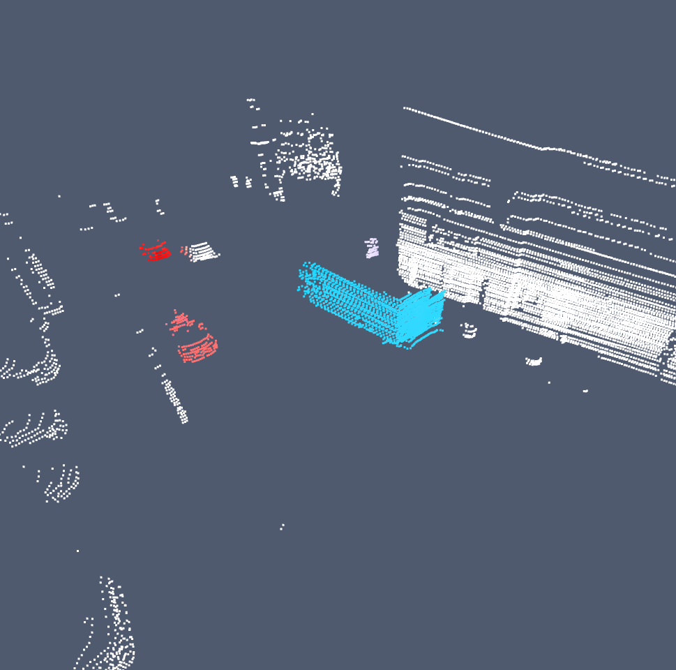
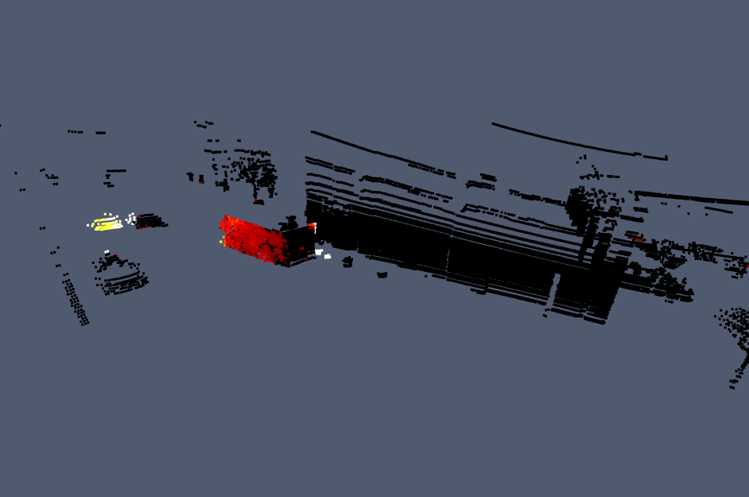
HilDA — flow / error
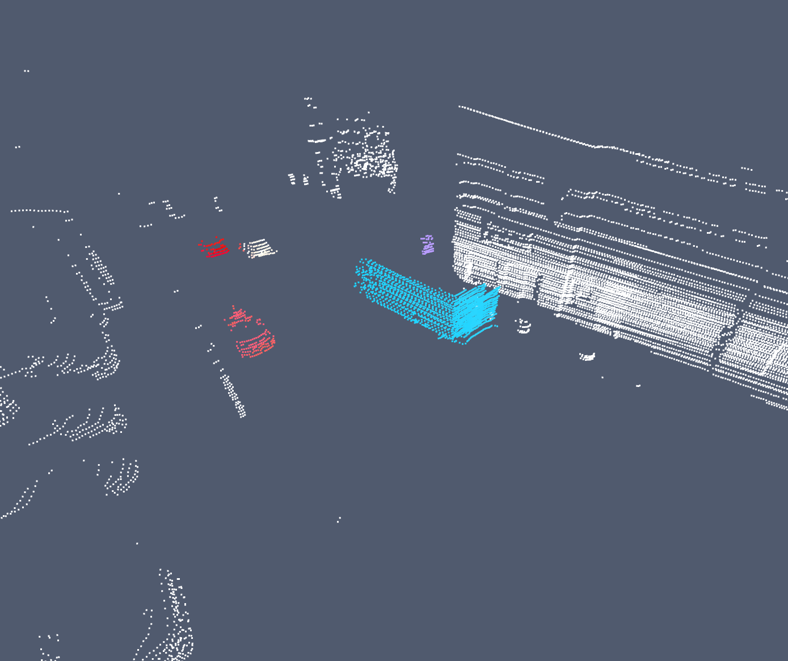
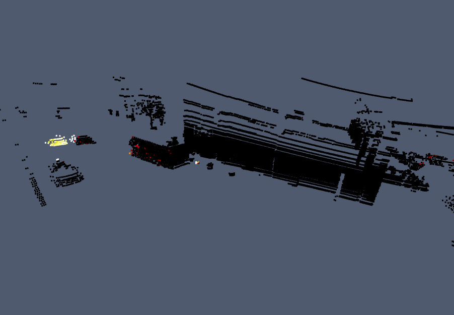
Integrated into SSF on Argoverse 2, HilDA's pre-trained features give cleaner motion maps and far fewer high-error regions (red), especially for dynamic objects — better temporal structure means better motion estimation where baselines fail.
Picking a single anchor (yellow dot) and comparing its feature against all others reveals how well HilDA's 3D features align with the 2D VFM teacher — across modalities, views, and semantic classes.
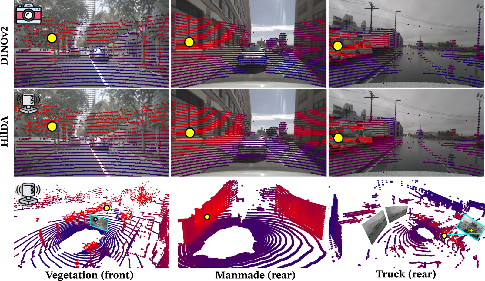
Cross-modal similarity. Cosine-similarity maps for an anchor point–pixel pair across three scenes. HilDA's 3D similarity (bottom) closely matches DINOv2's 2D pattern — strong cross-modal alignment across environments and classes.
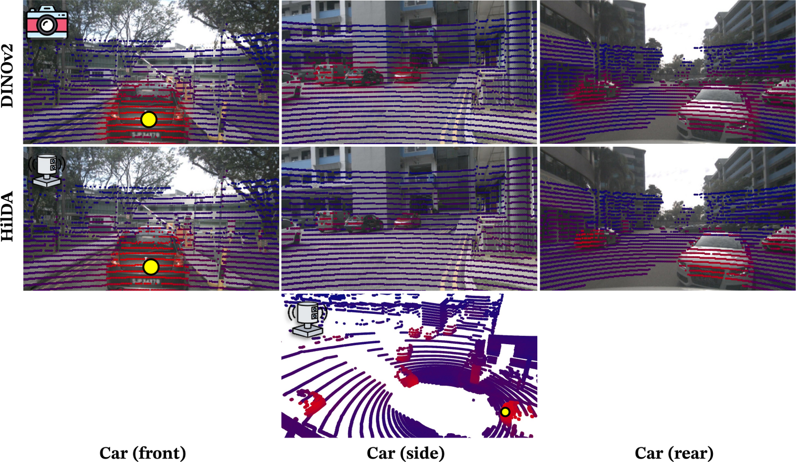
Cross-view similarity (car anchor). A single car anchor lights up other cars across all surround-view cameras and LiDAR points — category-level, cross-view alignment.
HilDA's features are robust enough to correct mistakes in the ground truth itself.
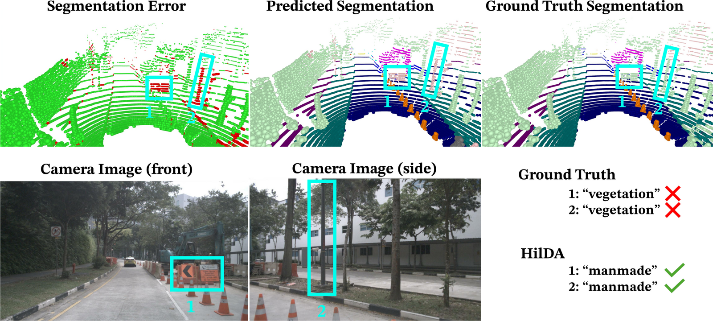
Ground truth mislabels a light pole and two construction signs as "vegetation"; HilDA correctly predicts "manmade".
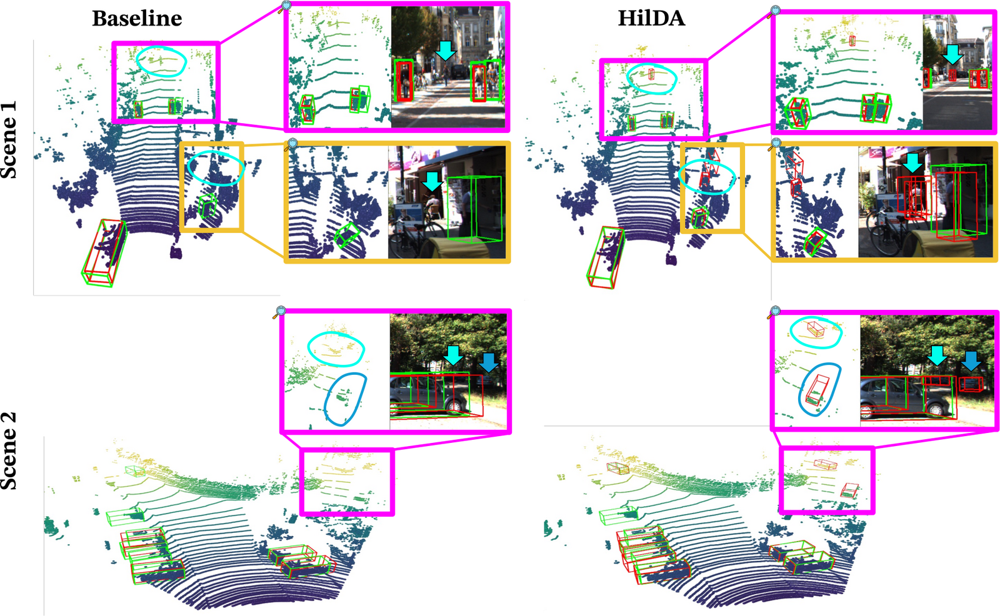
Detection false negatives. Where the annotations miss objects entirely, HilDA still recovers them — pedestrians and parked cars that CleverDistiller fails to capture.
@inproceedings{wozniak2026hilda,
title = {HilDA: Hierarchical Distillation with Diffusion for
Advancing Self-Supervised LiDAR Pre-training},
author = {Wozniak, Maciej and Ericsson, Jesper and
Govindarajan, Hariprasath and Nyberg, Truls and
Gustafsson, Thomas and Jensfelt, Patric and Andersson, Olov},
booktitle = {European Conference on Computer Vision (ECCV)},
year = {2026}
}